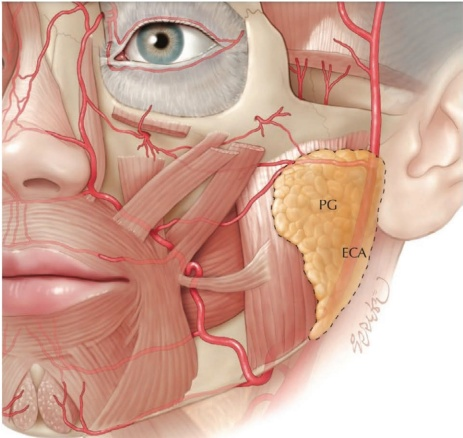
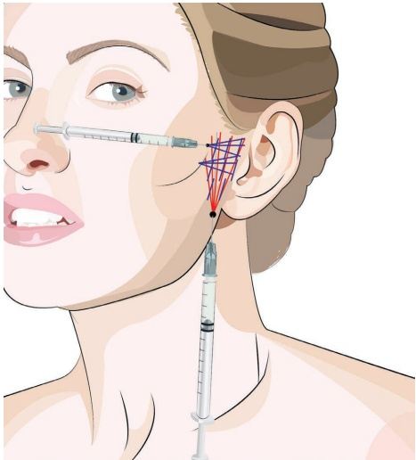
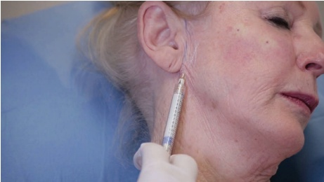
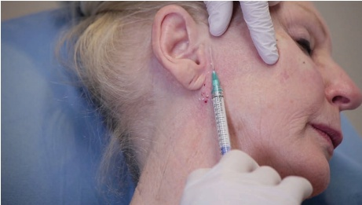
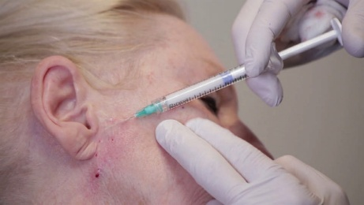

18 面部中三分之一：耳前皱纹
面部中三分之一区域耳前皱纹
JANI VAN LOGHEM
18.1 引言
耳前皱纹是衰老过程中出现的，是体积丢失、皮肤松弛以及咀嚼肌皮附着带因下颌骨向前吸收而牵拉的结果 [1]。耳前皱纹的理想矫正应关注所有与年龄相关的解剖学变化，因此应包含体积替代和皮肤再活力化。危险区域包括外颈动脉和腮腺（两者均位于SMAS深层）(图 18.1)。因此，安全有效的注射层次是皮下和真皮层 [2]。理论上，还应解决下颌骨的骨吸收问题。实际上，这并非总是必需的。关于在下颌骨（骨膜平面）注射羟基磷灰石钙（CaHA）的细节将在咀嚼肌增厚章节中更详细地讨论。
18.2 耳前皱纹，多层次技术
有关注射定位，参见图 18.2。
18.2.1 分步技术
- 标记并消毒待治疗区域。

-
在下颌角处用 23G 针头打一个预孔。
-
使用未稀释或正常稀释的 CaHA，并使用 25G、38 mm 或 50 mm 的钝性套管针进行皮下注射。
-
将钝性套管针推进皮肤至皮下脂肪（外侧颞颊部脂肪区）(图 18.3)。
-
以扇形技术放置多条逆行线性填充，直至达到足够的体积矫正。
-
根据需要塑形。
-
确定是否需要真皮内注射（皮薄且皮下注射后仍可见皱纹）。
-
使用高倍稀释的 CaHA（1.5 mL CaHA 与 0.5–1.5 mL 的（稀释）利多卡因）和锐针（27–28G，19 mm 套管针）(图 18.4)。


图 18.4 深层真皮锐针填充。

-
直接注射到皱纹（皮肤的薄弱点）内，真皮层内。
-
从内侧向外侧呈扇形交叉网格状注射，真皮层内（图 18.5）。
-
根据需要塑形。
18.3 术后护理
注射后，治疗区域可能会出现短暂的肿胀。肿胀可能不均匀，因此患者

应告知患者，任何肿胀都是可以预期的且是暂时的，但可能持续长达三天。对于接受锐针治疗前耳部皱纹的皮肤较薄的患者，出现瘀伤很常见。在这些情况下建议使用防晒霜。
18.4 为达到最佳效果的其他治疗
由于皮肤是本适应症的主要关注点，存在许多改善皮肤的方法，例如TCA焕肤、酚类焕肤、CO2激光、IPL等。
参考文献
[1] R. B. Shaw et al., “Aging of the facial skeleton: Aesthetic implications and rejuvenation strategies,” Plast Reconstr Surg, vol. 127, no. 1, pp. 374–383, 2011.
[2] J. A. J. van Loghem et al., “Calcium hydroxylapatite: Over a decade of clinical experience,” J Clin Aesthet Dermatol, vol. 8, no. 1, pp. 38–49, 2015.